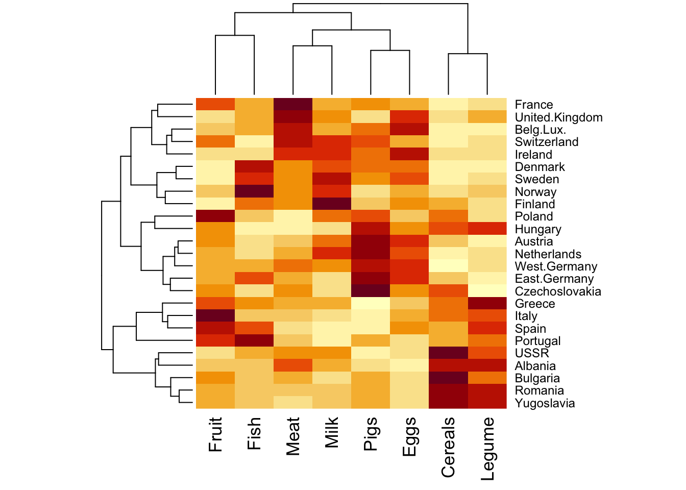

We use the same Food.txt data to illustrate two concepts: hierarchical clustering, and heatmap.
This is not a genomics dataset, but for the ease of interpretability, we use it for teaching purposes.
Let us load the dataset.
food <-read.table('data/Food.txt', header=T)# we change the name from pulses to a more common name, legumecolnames(food)[7] <-'Legume'head(food) # print first 6 lines
We scale the data (also called standardize, or normalize sometimes) so that each column (feature, variable) has 0 mean and 1 variance. We call the scaled data food_s.
food_s <-scale(food)head(food_s) # print first 6 lines
To do hierarchical clustering, the most convenient command is hclust(). As input you would need a distance between the subjects (patients, or countries in this example). We do it on the scaled data.
The command to compute pair-wise distance is dist(). By default, the distance being computed is the Euclidean distance (details optional). Euclidean distance is possibly the most commonly used metric, but there are others. See ?dist() to find out more options.
We can present the pair-wise distances in a matrix format. You can see that this matrix is symmetric, with 0 on the diagonal - this should be intuitive: the distance between A - B is the same as B - A, and the distance between A and itself is 0.
# compute distancefood_dist <-dist(food_s)# round(food_dist, digits = 2) # try this yourself to see what it does# alternatively, look at this as a matrixfood_dist_matrix <-as.matrix(food_dist)round(food_dist_matrix[1:5, 1:5], digits =2) # first 5 row 5 col
You can check the Euclidean distance between Albania and Austria is indeed 5.95. This distance is the square root of the sum of squared differences between two subjects in all their measurements.
round(food_s[1:2,], digits =2) # we only keep first 2 digits
Meat Pigs Eggs Milk Fish Cereals Legume Fruit
Albania 0.08 -1.83 -2.24 -1.16 -1.20 0.92 1.22 -1.35
Austria -0.28 1.66 1.23 0.39 -0.64 -0.39 -0.89 0.09
# take the data for two countries each albania <-round(food_s[1,], digits =2)austria <-round(food_s[2,], digits =2)# compute difference between each cold <- albania - austriad
Meat Pigs Eggs Milk Fish Cereals Legume Fruit
0.36 -3.49 -3.47 -1.55 -0.56 1.31 2.11 -1.44
# euclidean distance: square each element, sum together, and take a square rootsqrt(sum(d^2))
[1] 5.942096
Hierarchical clustering
Now that we have computed the distance food_dist, we plug it in the clustering algorithm, hclust().
We try the complete linkage method, by specifying method = 'complete'. The result is saved as hc.complete. You can visualize it, and add label of the country names to make it easier to read.
Hierarchical clustering is a class of methods, and there are a variety of options to set.
Linkage (by seting method inside hclust()): complete, single, average
Dissimilarity: Euclidean, correlation, …
Scaling: scaled data (mean 0 variance 1) or unscaled, original data
There is no definite guide on which combination works the best, hence you can try them out and see what could make most sense. Again, in unsupervised learning data do not have outcome labels, so the interpretation is left for the domain experts to make.
# single linkagehc.single <-hclust(food_dist, method="single")plot(hc.single, labels=rownames(food), main="Single Linkage", xlab="", sub="")
# average linkagehc.average <-hclust(food_dist, method="average")plot(hc.average, labels=rownames(food), main="Average Linkage", xlab="", sub="")
# correlation as dissimiarity, rather than euclidean distancedd <-as.dist(1-cor(t(food_s))) # compute the metrichc.corr <-hclust(dd, method="complete") # clusterplot(hc.corr, labels=rownames(food), main="Complete linkage with correlation-based distance", xlab="", sub="")
Heatmap
Heatmap is a visualization tool to plot data of similar values in similar colors, so that you can identify visualy if there is any pattern. It can also be combined with hierarchical clustering - this is actually the default outcome: dendrograms are displayed for both rows and column.
# make heatmap on the scaled dataheatmap(food_s)

To preserve the original ordering of the columns and rows, you can specify Rowv = NA, Colv = NA.
# no clustering for row or col, this preserves the original orderingheatmap(food_s, Rowv =NA, Colv =NA)
Can also only do clustering for row only (or column only).
# only clustering for rowheatmap(food_s, Colv =NA)
Exercise 2: NCI60
We look at the NCI60 data again. First load the dataset.
library(ISLR)# or, load('data/NCI60.RData')nci.labs <- NCI60$labs # Sample labels (tissue type)nci.data <- NCI60$data # Gene expression data set
Hierarchical clustering
We start by scaling the data, and calculate the distance matrix (using the Euclidean distance), and then investigate different linkage methods.
# Scale the data to zero mean and unit variance:sd.data <-scale(nci.data)# Calculate the distance matrix # equivalent: data.dist <- dist(sd.data, method="euclidean")data.dist <-dist(sd.data)
Next we perform hierarchical clustering with distance matrix as input. The function we use is hclust(). We specify the linkage method to be complete.
Once the result is saved in hc.complete object, you can plot the dendrogram.
The object hc.complete contains a lot of information. To get the information, you can use the $ operator.
You should refer to the documentation for hclust() to see a complete list of output. Use ?hclust to get the documentation on how to use the function.
hc.complete$dist.method # distance method
[1] "euclidean"
# hc.complete$merge # order of aggregations of samples / clusters# hc.complete$height # distance at which aggregations happen# hc.complete$labels # labels (numeric, since we don't know the original categories!)# hc.complete$method# hc.complete$call
We can try different linkage methods and see how the clustering results differ. Change the method argument in the function, and plot the results.
The way to interpret the height variable is simple: it is where two clusters are merged into one. For example, the largest cluster corresponds to the last value of height (162.2) - if you check the figure, it is exactly where the horizontal line is merging the two groups. Similarly, 142.9 is where three groups became two, 141.2 is where four groups became three. If you draw a line at 140, it points out the four clusters.
How are the labels distributed between clusters? We can focus on 4 cluster situation, and use table() to list out which cancer types is merged in which of the four clusters.
For example, breast cancer appears in all but 3rd cluster; melanoma only appears in the first clsuter; so on so forth.
Finally, we see what happens if we use unscaled data instead of scaled data, or if we use a correlation-based distance metric instead of the Euclidean distance.
Compare the dendrograms: How different are the resulting clusterings? Do you recognise subclusters that are consistent?
# Compare scaled data versus non-scaled data:hc.unscaled <-hclust(dist(nci.data), method="complete")plot(hc.unscaled, labels=nci.labs, main="Complete linkage with unscaled features", xlab="", sub="")
# Compare Euclidean distance with correlation-based distance:dd <-as.dist(1-cor(t(sd.data)))hc.corr <-hclust(dd, method="complete")plot(hc.corr, labels=nci.labs, main="Complete linkage with correlation-based distance", xlab="", sub="")
K-means clustering
In this section we explore the K-means clustering on the same dataset.
In contrast to the hierarchical clustering which requires a distance as input, with K-means you would provide the data matrix. The data matrix can be scaled (centered and with unit variance), or unscaled.
In this example we use scaled data computed from before, sd.data.
set.seed(4) # set random seedkm.out4 <-kmeans(sd.data, centers =4, nstart=20)km.out4$cluster
Read the help file ?kmeans to understand what the argument nstart=20 does. Comparing an analysis with nstart=20 versus nstart=1 demonstrates how the cluster results can be improved if we allow more evaluations with different randomly chosen starting centroids.
Set a different random seed, say 3 (as long as it’s different from the one you used before), and run the analysis again. This time we use a different nstart
# different starting centroids improve the clustering:set.seed(3)km.out <-kmeans(sd.data, centers =4, nstart=1)km.out$cluster # cluster label
# we can directly compare the k-means result (along rows)# with the hierarchical clustering result (along columns)table(km.out4$cluster, hc.clusters[,"4"], deparse.level=2)
From the results, you can see that the results are slightly different between the two methods. Keep in mind that in unsupervised learning you do not have the real outcome label (such as the cancer types here), so you need to try a few different methods and compare the outputs, and make interpretations accordingly.
Visualize clusters
We can visualise the K-means clustering results of high-dimensional data by using PCA for dimension reduction. We plot the first two principal components and colour the data points (= individual cell lines) by their assigned cluster from K-means.
# first, run PCA again on the NCI60 datapr.out <-prcomp(nci.data, scale=TRUE)# more cluster optionskm.out2 <-kmeans(sd.data, 2, nstart=20)km.out3 <-kmeans(sd.data, 3, nstart=20)# we can now visualise the K-Means results by labelling the data points# in a plot of the scores of the first 2 principal components:par(mfrow=c(1,3))plot(pr.out$x[,1:2], col=(km.out2$cluster+1), main="K-Means with K=2",xlab="PC 1", ylab="PC 2", pch=20)plot(pr.out$x[,1:2], col=(km.out3$cluster+1), main="K-Means with K=3",xlab="PC 1", ylab="PC 2", pch=20)plot(pr.out$x[,1:2], col=(km.out4$cluster+1), main="K-Means with K=4",xlab="PC 1", ylab="PC 2", pch=20)
Compare with the plot from Exercise 2 yesterday (left panel) along with the cancer type labels. The clusters from K-means seem to correspond decently to partition the data into groups.
A heatmap is another way to visualize the clusters from the data. We use the principal components rather than the raw data, as PCs are already explaining a large amount of variability in the over 6000 features.
Similar values are presented with similar colors.
## We use the scores of the PCA on the NCI60 data, to reduce dimensionscores <- pr.out$xscores[1:5, 1:5] # first 5 pc, first 5 measurements
You can remove the dendrogram on the PCs, only keeping the ones for cancer types. Now you see that the PCs have kept their original order from 1 to 64.
# hc.corr is the result from hclust. check the section on hierarchical clusteringheatmap(pr.out$x, Rowv =as.dendrogram(hc.corr), Colv =NA)
You can also reduce the number of PCs, and add titles to the plot annd y-axis.
par(cex.main = .7)heatmap(pr.out$x[,1:40], Rowv =as.dendrogram(hc.corr), Colv =NA,labRow = nci.labs, main ='Heatmap of the scores of the first 40 PCs on the NCI60 data')
Exercise 3: Gene expression data
(CH12Ex13 from statistical learning)
We use the Ch12Ex13.csv data to repeat some of the clustering analysis we did.
The first 20 samples are from healthy patients, while the second 20 are from a diseased group.
Load in the data using read.csv(). You will need to select header=F. Alternatively: load in the data using “Import dataset” in the upper right window, and click “no” on the “Heading” option.
Carry out both hierarchical clustering and K-means clustering. You should choose the most meaningful number of clusters (think about how many groups of patients we have!). Compare the results.
Note: remember that the data has genes on the rows and patients on the columns. You need to transpose the data so that the orders are reversed.
# load in the data using read.csv(). You will need to select header=F.data <-read.csv("data/Ch12Ex13.csv", header=FALSE)dim(data)
[1] 1000 40
# transpose the data, so that we have each row is one patient (subject)data <-t(data)
Now the first 20 rows are measurements from healthy patients (group 0), and 21-50 rows are the disease patients (group 1). We can denote this information in a vector like this.
true.groups <-c( rep(0,20), rep(1,20))
Hierarchical clustering
You can use different linkage options and distance metrics of your choosing. For example, with complete linkage the code is like this.
data.dist <-dist(data) # need to compute the distance matrixhclust.df <-hclust(data.dist, method="complete" )#alternatives:#hclust.df <- hclust( D, method="average" )#hclust.df <- hclust( D, method="single" )
We can keep 2 clusters with cutree. Then do a cross tabulation of the true labels and clustered results: how well do they correspond?
# find the clusterspredicted <-cutree( hclust.df, k=2 )# How well does our clustering predict health vs. diseasedtable(predicted, true.groups )
true.groups
predicted 0 1
1 20 0
2 0 20
K-means
Now you can use K-means to identify 2 clusters.
predicted.kmean <-kmeans(data, 2, nstart=20)$cluster# agreement with true labeltable(predicted.kmean, true.groups )
true.groups
predicted.kmean 0 1
1 20 0
2 0 20
Both methods seem to do work decently for the task.
Source Code
---title: "R Lab (day 4): Clustering"format: html: code-fold: false code-tools: true---Download datasets [here](https://github.com/ocbe-uio/course_med3007/tree/main/lab/data), or from Canvas.R script: [Code](https://github.com/ocbe-uio/course_med3007/blob/main/lab/code/MED3007_Lab3_clustering.R)Presentation (2024 version by Chi): [Slides](presentation/Lab_clustering.pdf)## Exercise 1: FoodWe use the same `Food.txt` data to illustrate two concepts: hierarchical clustering, and heatmap. This is not a genomics dataset, but for the ease of interpretability, we use it for teaching purposes.Let us load the dataset.```{r}#| label: hc-food-loaddata#| warning: false#| echo: truefood <-read.table('data/Food.txt', header=T)# we change the name from pulses to a more common name, legumecolnames(food)[7] <-'Legume'head(food) # print first 6 lines ```We **scale** the data (also called standardize, or normalize sometimes) so that each column (feature, variable) has 0 mean and 1 variance. We call the scaled data `food_s`.```{r}#| label: hc-food-scale#| warning: false#| echo: truefood_s <-scale(food)head(food_s) # print first 6 lines```### DistancesTo do hierarchical clustering, the most convenient command is `hclust()`. As input you would need a **distance** between the subjects (patients, or countries in this example). We do it on the scaled data.The command to compute pair-wise distance is `dist()`. By default, the distance being computed is the Euclidean distance (*details optional*). Euclidean distance is possibly the most commonly used metric, but there are others. See `?dist()` to find out more options.We can present the pair-wise distances in a matrix format. You can see that this matrix is symmetric, with 0 on the diagonal - this should be intuitive: the distance between A - B is the same as B - A, and the distance between A and itself is 0.```{r}#| label: hc-food-dist#| warning: false#| echo: true# compute distancefood_dist <-dist(food_s)# round(food_dist, digits = 2) # try this yourself to see what it does# alternatively, look at this as a matrixfood_dist_matrix <-as.matrix(food_dist)round(food_dist_matrix[1:5, 1:5], digits =2) # first 5 row 5 col```::: callout-note## Optional: Euclidean disanceYou can check the Euclidean distance between Albania and Austria is indeed 5.95. This distance is the square root of the sum of squared differences between two subjects in all their measurements. :::```{r}#| label: hc-food-dist2#| warning: false#| echo: trueround(food_s[1:2,], digits =2) # we only keep first 2 digits# take the data for two countries each albania <-round(food_s[1,], digits =2)austria <-round(food_s[2,], digits =2)# compute difference between each cold <- albania - austriad# euclidean distance: square each element, sum together, and take a square rootsqrt(sum(d^2)) ```### Hierarchical clusteringNow that we have computed the distance `food_dist`, we plug it in the clustering algorithm, `hclust()`. We try the complete linkage method, by specifying `method = 'complete'`. The result is saved as `hc.complete`. You can visualize it, and add label of the country names to make it easier to read.```{r}#| label: hc-food-complete#| warning: false#| echo: truehc.complete <-hclust(food_dist, method="complete")plot(hc.complete, labels=rownames(food), main="Complete Linkage", xlab="", sub="")```### Linkage, dissimilarity, scalingHierarchical clustering is a class of methods, and there are a variety of options to set. * Linkage (by seting `method` inside `hclust()`): complete, single, average* Dissimilarity: Euclidean, correlation, ...* Scaling: scaled data (mean 0 variance 1) or unscaled, original dataThere is no definite guide on which combination works the best, hence you can try them out and see what could make most sense. Again, in unsupervised learning data do not have outcome labels, so the interpretation is left for the domain experts to make.```{r}#| label: hc-food-linkage#| warning: false#| echo: true# single linkagehc.single <-hclust(food_dist, method="single")plot(hc.single, labels=rownames(food), main="Single Linkage", xlab="", sub="")# average linkagehc.average <-hclust(food_dist, method="average")plot(hc.average, labels=rownames(food), main="Average Linkage", xlab="", sub="")``````{r}#| label: hc-food-unscaled#| warning: false#| echo: true# unscaled data, complete linkagehc.unscaled <-hclust(dist(food), method="complete")plot(hc.unscaled, labels=rownames(food), main="Complete linkage with unscaled features", xlab="", sub="")``````{r}#| label: hc-food-cor#| warning: false#| echo: true# correlation as dissimiarity, rather than euclidean distancedd <-as.dist(1-cor(t(food_s))) # compute the metrichc.corr <-hclust(dd, method="complete") # clusterplot(hc.corr, labels=rownames(food), main="Complete linkage with correlation-based distance", xlab="", sub="")```### HeatmapHeatmap is a visualization tool to plot data of similar values in similar colors, so that you can identify visualy if there is any pattern. It can also be combined with hierarchical clustering - this is actually the default outcome: dendrograms are displayed for both rows and column.```{r}#| label: hc-food-heatmap1#| warning: false#| echo: true# make heatmap on the scaled dataheatmap(food_s)```To preserve the original ordering of the columns and rows, you can specify `Rowv = NA, Colv = NA`.```{r}#| label: hc-food-heatmap2#| warning: false#| echo: true# no clustering for row or col, this preserves the original orderingheatmap(food_s, Rowv =NA, Colv =NA)```Can also only do clustering for row only (or column only). ```{r}#| label: hc-food-heatmap3#| warning: false#| echo: true# only clustering for rowheatmap(food_s, Colv =NA)```## Exercise 2: NCI60We look at the NCI60 data again. First load the dataset.```{r}#| label: clust-nci60-loaddata#| warning: false#| echo: truelibrary(ISLR)# or, load('data/NCI60.RData')nci.labs <- NCI60$labs # Sample labels (tissue type)nci.data <- NCI60$data # Gene expression data set```### Hierarchical clusteringWe start by scaling the data, and calculate the distance matrix (using the Euclidean distance), and then investigate different linkage methods.```{r}#| label: clust-nci60-scale#| warning: false#| echo: true# Scale the data to zero mean and unit variance:sd.data <-scale(nci.data)# Calculate the distance matrix # equivalent: data.dist <- dist(sd.data, method="euclidean")data.dist <-dist(sd.data)```Next we perform hierarchical clustering with distance matrix as input. The function we use is `hclust()`. We specify the linkage method to be `complete`.Once the result is saved in `hc.complete` object, you can plot the dendrogram.```{r}#| label: clust-nci60-hccomplete#| warning: false#| echo: true# Perform clusteringhc.complete <-hclust(data.dist, method="complete")# names(hc.complete)plot(hc.complete, labels=nci.labs, main="Complete Linkage", xlab="", sub="")```The object `hc.complete` contains a lot of information. To get the information, you can use the `$` operator. You should refer to the documentation for `hclust()` to see a complete list of output. Use `?hclust` to get the documentation on how to use the function.```{r}#| label: clust-nci60-hccomplete-2#| warning: false#| echo: truehc.complete$dist.method # distance method# hc.complete$merge # order of aggregations of samples / clusters# hc.complete$height # distance at which aggregations happen# hc.complete$labels # labels (numeric, since we don't know the original categories!)# hc.complete$method# hc.complete$call```We can try different linkage methods and see how the clustering results differ. Change the `method` argument in the function, and plot the results.```{r}#| label: clust-nci60-otherlink#| warning: false#| echo: true#| eval: falsehc.average <-hclust(data.dist, method="average")hc.single <-hclust(data.dist, method="single")plot(hc.average, labels=nci.labs, main="Average Linkage", xlab="", sub="")plot(hc.single, labels=nci.labs, main="Single Linkage", xlab="", sub="")```Now we focus on **complete linkage** only.First, we use `cutree()` to compare the results when the data are separated into either 2 or 4 clusters.```{r}#| label: clust-nci60-cutree#| warning: false#| echo: true# Compare 2 clusters and 4 clusters:hc.clusters <-cutree(hc.complete, c(2, 4))head(hc.clusters) # print first 6 results# cross tabulationtable(hc.clusters[,"2"], hc.clusters[,"4"])```It is more straightforward to check the results with a dendrogram.```{r}# visualize the cuts# how do you know where to draw the line? check heightheights <- hc.complete$heighttail(heights, 4) # print the last 4plot(hc.complete, labels=nci.labs, main="Complete Linkage", xlab="", sub="")abline(h=140, col="red") # 4 clustersabline(h=150, col="blue") # 2 clusters```The way to interpret the height variable is simple: it is where two clusters are merged into one. For example, the largest cluster corresponds to the last value of `height` (162.2) - if you check the figure, it is exactly where the horizontal line is merging the two groups. Similarly, 142.9 is where three groups became two, 141.2 is where four groups became three. If you draw a line at 140, it points out the four clusters.How are the labels distributed between clusters? We can focus on 4 cluster situation, and use `table()` to list out which cancer types is merged in which of the four clusters.For example, breast cancer appears in all but 3rd cluster; melanoma only appears in the first clsuter; so on so forth.```{r}#| label: clust-nci60-cutree2#| warning: false#| echo: truetable(hc.clusters[,"4"], nci.labs)```Finally, we see what happens if we use **unscaled data** instead of scaled data, or if we use a **correlation-based distance metric** instead of the Euclidean distance.Compare the dendrograms: How different are the resulting clusterings? Do you recognise subclusters that are consistent?```{r}#| label: clust-nci60-unscale#| warning: false#| echo: true# Compare scaled data versus non-scaled data:hc.unscaled <-hclust(dist(nci.data), method="complete")plot(hc.unscaled, labels=nci.labs, main="Complete linkage with unscaled features", xlab="", sub="")# Compare Euclidean distance with correlation-based distance:dd <-as.dist(1-cor(t(sd.data)))hc.corr <-hclust(dd, method="complete")plot(hc.corr, labels=nci.labs, main="Complete linkage with correlation-based distance", xlab="", sub="")```### K-means clusteringIn this section we explore the K-means clustering on the same dataset. In contrast to the hierarchical clustering which requires a **distance** as input, with K-means you would provide the data matrix. The data matrix can be scaled (centered and with unit variance), or unscaled.In this example we use scaled data computed from before, `sd.data`. ```{r}#| label: clust-nci60-km4#| warning: false#| echo: trueset.seed(4) # set random seedkm.out4 <-kmeans(sd.data, centers =4, nstart=20)km.out4$cluster```Read the help file `?kmeans` to understand what the argument nstart=20 does. Comparing an analysis with nstart=20 versus nstart=1 demonstrates how the cluster results can be improved if we allow more evaluations with different randomly chosen starting centroids.Set a different random seed, say 3 (as long as it's different from the one you used before), and run the analysis again. This time we use a different `nstart````{r}#| label: clust-nci60-km3#| warning: false#| echo: true# different starting centroids improve the clustering:set.seed(3)km.out <-kmeans(sd.data, centers =4, nstart=1)km.out$cluster # cluster label```### Compare with hierarchical clustering```{r}#| label: clust-nci60-km-res#| warning: false#| echo: true# we can directly compare the k-means result (along rows)# with the hierarchical clustering result (along columns)table(km.out4$cluster, hc.clusters[,"4"], deparse.level=2)```From the results, you can see that the results are slightly different between the two methods. Keep in mind that in unsupervised learning you do not have the real outcome label (such as the cancer types here), so you need to try a few different methods and compare the outputs, and make interpretations accordingly.### Visualize clustersWe can visualise the K-means clustering results of high-dimensional data by using PCA for dimension reduction. We plot the first two principal components and colour the data points (= individual cell lines) by their assigned cluster from K-means.```{r}#| label: clust-nci60-km-pca#| warning: false#| echo: true# first, run PCA again on the NCI60 datapr.out <-prcomp(nci.data, scale=TRUE)# more cluster optionskm.out2 <-kmeans(sd.data, 2, nstart=20)km.out3 <-kmeans(sd.data, 3, nstart=20)# we can now visualise the K-Means results by labelling the data points# in a plot of the scores of the first 2 principal components:par(mfrow=c(1,3))plot(pr.out$x[,1:2], col=(km.out2$cluster+1), main="K-Means with K=2",xlab="PC 1", ylab="PC 2", pch=20)plot(pr.out$x[,1:2], col=(km.out3$cluster+1), main="K-Means with K=3",xlab="PC 1", ylab="PC 2", pch=20)plot(pr.out$x[,1:2], col=(km.out4$cluster+1), main="K-Means with K=4",xlab="PC 1", ylab="PC 2", pch=20)```Compare with the plot from Exercise 2 yesterday (left panel) along with the cancer type labels. The clusters from K-means seem to correspond decently to partition the data into groups.```{r}par(mfrow=c(1,1))Cols=function(vec){ cols=rainbow(length(unique(vec)))return(cols[as.numeric(as.factor(vec))])}plot(pr.out$x[,1:2], col=Cols(nci.labs), pch=19,xlab="PC 1",ylab=" PC 2")legend('topleft', col=rainbow(length(unique(nci.labs))), legend=unique(nci.labs), bty='n', lwd=2, cex=.6)```### Heatmap A heatmap is another way to visualize the clusters from the data. We use the principal components rather than the raw data, as PCs are already explaining a large amount of variability in the over 6000 features.Similar values are presented with similar colors. ```{r}#| label: clust-nci60-heatmap-pca#| warning: false#| echo: true## We use the scores of the PCA on the NCI60 data, to reduce dimensionscores <- pr.out$xscores[1:5, 1:5] # first 5 pc, first 5 measurements# default choicesheatmap(pr.out$x)```You can remove the dendrogram on the PCs, only keeping the ones for cancer types. Now you see that the PCs have kept their original order from 1 to 64.```{r}#| label: clust-nci60-heatmap-dendro#| warning: false#| echo: true# hc.corr is the result from hclust. check the section on hierarchical clusteringheatmap(pr.out$x, Rowv =as.dendrogram(hc.corr), Colv =NA)```You can also reduce the number of PCs, and add titles to the plot annd y-axis.```{r}#| label: clust-nci60-heatmap-type#| warning: false#| echo: truepar(cex.main = .7)heatmap(pr.out$x[,1:40], Rowv =as.dendrogram(hc.corr), Colv =NA,labRow = nci.labs, main ='Heatmap of the scores of the first 40 PCs on the NCI60 data')```## Exercise 3: Gene expression data(CH12Ex13 from statistical learning)We use the `Ch12Ex13.csv` data to repeat some of the clustering analysis we did.The first 20 samples are from healthy patients, while the second 20 are from a diseased group.Load in the data using read.csv(). You will need to select header=F. Alternatively: load in the data using “Import dataset” in the upper right window, and click “no” on the “Heading” option.Carry out both hierarchical clustering and K-means clustering. You should choose the most meaningful number of clusters (think about how many groups of patients we have!). Compare the results. Note: remember that the data has genes on the rows and patients on the columns. You need to transpose the data so that the orders are reversed.```{r}#| label: clust-ge-loaddata#| warning: false#| echo: true# load in the data using read.csv(). You will need to select header=F.data <-read.csv("data/Ch12Ex13.csv", header=FALSE)dim(data)# transpose the data, so that we have each row is one patient (subject)data <-t(data) ```Now the first 20 rows are measurements from healthy patients (group 0), and 21-50 rows are the disease patients (group 1). We can denote this information in a vector like this.```{r}#| label: clust-ge-truelabel#| warning: false#| echo: truetrue.groups <-c( rep(0,20), rep(1,20))```### Hierarchical clustering You can use different linkage options and distance metrics of your choosing. For example, with complete linkage the code is like this.```{r}#| label: clust-ge-clust#| warning: false#| echo: truedata.dist <-dist(data) # need to compute the distance matrixhclust.df <-hclust(data.dist, method="complete" )#alternatives:#hclust.df <- hclust( D, method="average" )#hclust.df <- hclust( D, method="single" )```We can keep 2 clusters with `cutree`. Then do a cross tabulation of the true labels and clustered results: how well do they correspond?```{r}#| label: clust-ge-clust-res#| warning: false#| echo: true# find the clusterspredicted <-cutree( hclust.df, k=2 )# How well does our clustering predict health vs. diseasedtable(predicted, true.groups )```### K-meansNow you can use K-means to identify 2 clusters. ```{r}#| label: clust-ge-km#| warning: false#| echo: truepredicted.kmean <-kmeans(data, 2, nstart=20)$cluster# agreement with true labeltable(predicted.kmean, true.groups )```Both methods seem to do work decently for the task.